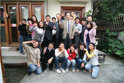
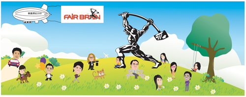

實習時間:97/1/28~97/2/15
一、實習目標：
藉由此次寒假課外實習，可以多學到一點技術或知道目前業界
有欠缺什麼樣的人才，並且看看外面的設計世界，了解自己
可往哪方面繼續發展。
二、實習目標是否達成，並說明執行情形難易的原因。
實習目標有達成，有學到不少業界的技術，也知道公司有哪些專業人員
不只有設計師，還有專案的業務員。他們有些是當過設計師。
在實習期間也知道自己缺乏某些能力。因此在執行上速度有點慢。
藉此可以謹惕自己，趁著空檔趕緊補起來。
三、實習的質、量與內容，及實習內容與學校課程配合的情形。
1.去背
去背在大一的影像處理有教過，而且老師教了不少種方法
其中有一種在公司最常用，很實用。
2.公司命名及LOGO設計
公司英文命名是第一次接觸到，感覺蠻新鮮的。看了公司以前命名的資料，
學習到了不少方法。藉此可以腦力激盪一下，很好玩。
LOGO設計，在設計時倒是把自己的思想侷限住了。想說大公司比較穩重，
設計出來的LOGO比較呆版。沒用到水平思考去想像。
3.網站管理
修改網站資訊及幫忙做公司flash。修改網站資料比較簡單，上學期上完
網頁設計剛好可以複習一下。Flash在做的過程中有點困難，不過作就了就
熟悉許多了。
4.公司人物公仔設計
總經理要求我們要觀察公司的每位人物，把每個人的特點找出放大做成
Q版畫。我去找了書來學怎麼畫。人型還可以很快畫出不過場景和人物設定
就花了不少時間。
四、心得與其他建議
在這次的實習中我被安排在一間小型工作室，在裡面感受到一種緊張
是良好的、被需要的緊張。早上去休息打掃一下，就開始上工。
每位設計師每天都有一定的進度，做不完還是得做到完才下班。
非常的拼命!!往頭上看是一排一排的圖庫書。不時都有設計師拿下來
參考、使用，當技術發生問題時，同事之間相互詢問，尋求方法。
我非常開心，很幸運地待在這個工作室，這是一個充滿緊張卻
不失溫馨的工作室。讓我體會設計師的生活。
五、實習成果:

校長主任訪視

Q板人物設計
|